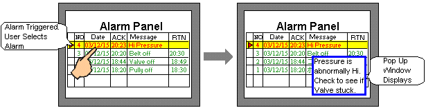

To run operations when an alarm is selected, set up the Touch Actions in the variable alarm properties or in the alarm group properties.

Follow these steps to set up a Touch Action.
Steps
1. Specify the Touch Action settings in the variable alarm properties or in the Alarm Group properties. See Specifying Touch Action Settings.
2. Enable Touch Actions in the alarm summary. Also set the other options in the alarm summary as required. See Enabling Touch Actions in the Alarm Summary.
3. If required, draw switches to display a cursor and run the touch actions. See Section 9.2, Creating Switches.